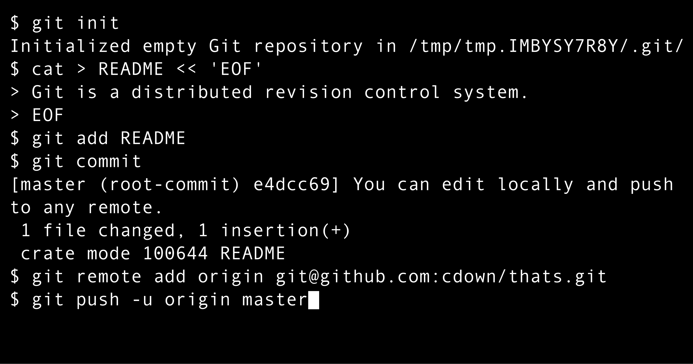

Git
Git is a distributed version control system[9] that tracks
versions of files. It is often used to control source code by
programmers collaboratively developing software. Design goals of Git
include speed, data integrity, and support for distributed, non-linear
workflows — thousands of parallel branches running on different
computers.
Källa - Wikipedia

Hur Git fungerar
Git arbetar med fyra huvudsakliga platser:
- Working Directory: Där du aktivt redigerar filer lokalt
- Staging Area: En tillfällig lagringsplats för ändringar innan de committas
- Local Repository: Lagrar committade ändringar på din lokala maskin
- Remote Repository: En server (som GitHub) för att dela backa up kod
Vanligt arbetsflöde
Ofta vill man ladda upp sina förändringar på på sin Remote Repository
- git init: Skapar ett lokalt repo i mappen du står i
- git add: Lägger till förändringar i filen till staging-området (förbereder filen för commit).
- git commit -m "message..": Skapar en commit med de ändringar som lagts till staging-området. Meddelandet beskriver vad som ändrats.
- git push: Skickar dina commits till ett remote repository.
Skaparen

Fun Fact: Linus Torvald skapade Git som ett sidoprojekt när han utvecklade Linux kärnan!
Branch - The Killer Feature

När man utvecklar arbetar man ofta i en seperat branch. En git branch är en separat utvecklingslinje som tillåter parallellt arbete på olika versioner av samma projekt utan att påverka huvudkoden. Detta är git-verktygets stora fördel när man jobbar flera utvecklare på samma projekt.
Uppgift 1
Skapa ett repo för en presentationshemsida om dig själv
- Öppna upp en ny map med VS Code
- Öppna upp en terminal och skapa ett lokalt repo (init)
- Skapa en index.html fil och lägg in information om dig. Förslagsvis:
- Namn och vart du är bostadd
- En bild
- Beskriv en av dina hobbies
- Använd live-server (eller motsvarande) för att se hur sidan ser ut lokalt
- Staga din förändringar (add)
- comitta din förändringar (commit)
Fallgropar
- Din sökväg där du har terminalen och sökvägen där du har ditt working directory matchar inte. Åtgärd - Starta VS Code i mappen som du har hemsidan.
- Terminalen fungerar inte i VS Code. Åtgärd - Använd Git Bash som ett separat program sålänge. Använd "CTRL+Shift+P" och skriv "New External Terminal"
Uppgift 2
Pusha ditt repo till en remote
- Logga in på Github och navigera till "New Repository"
- Ge ditt repo ett namn t.ex "presentation-page" och låt repot vara Public
- Försök följa instruktionerna på Github för att ladda upp ditt lokala repo
Uppgift 3
Publicera hemsidan med Github Pages
- Logga in på Github och navigera till ditt repo du nyss har laddat upp till
- Gå in på settings och navigera till "Pages"
- Under "Branch" så välj "main" och tryck "save", vänta 2 minuter och ladda om
- Skicka din hemsida till Henry på Teams
Tips
Det är lättare om ni säkerställer att era lokala repos har samma namn på er huvudbranch som Github - Det vill säga "main" istället för "master". Kör detta kommandot i Git Bash
git config --global init.defaultBranch main